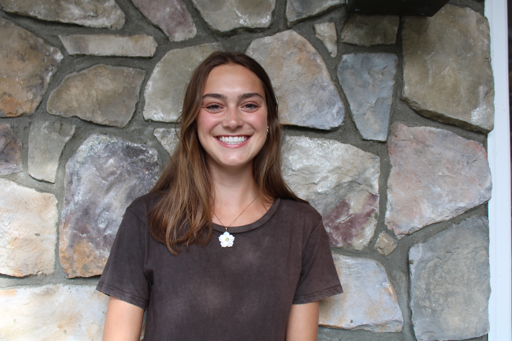

 This Is Me My name is Keagan Ostop, I am 20 years old, and a current sophomore Journalism student at Fordham University. I grew up in Hartford County Connecticut with my mom, dad, younger brother, dog, and cat. I grew up attending catholic school and in 2020 I graduated high school. As a reuslt of the Covid-19 pandemic I deffered my admission to Fordham for one year and took a gap year. This was never in my original life plan, but it was one of the greatest decisions I have ever made. I traveled around the country and spent a majority of the year camping and exploring nature. I was able to broaden my horizons from the small circle I knew my life to be at the age of 18 and grew as an individual. Now with three semesters of college under my belt I look back on my gap year with pure joy as I recognize how lucky I was to be able to grow and learn so much in a period when everything felt still. I am studying Journalism at Fordham so I can live a life of constant movement and learning. Hopefully one day I will get to share lessons and stories with the world.
| Award | Date |
|---|---|
| YWCA Good Citizen Award | 2019 |
| Daughters of the American Revolution Student Leader | 2020 |
| Diane T. Weldon; Excellence in Theater and English | 2020 |
| Fordham University Deans List | Fall 2021, Spring 2022 |
| Fordham University Global Outreach Scholar | 2023 |
Skills
- Writing
- Editing
- Public Speaking
- Communication
- Working with Others
- Organization
- Time Management